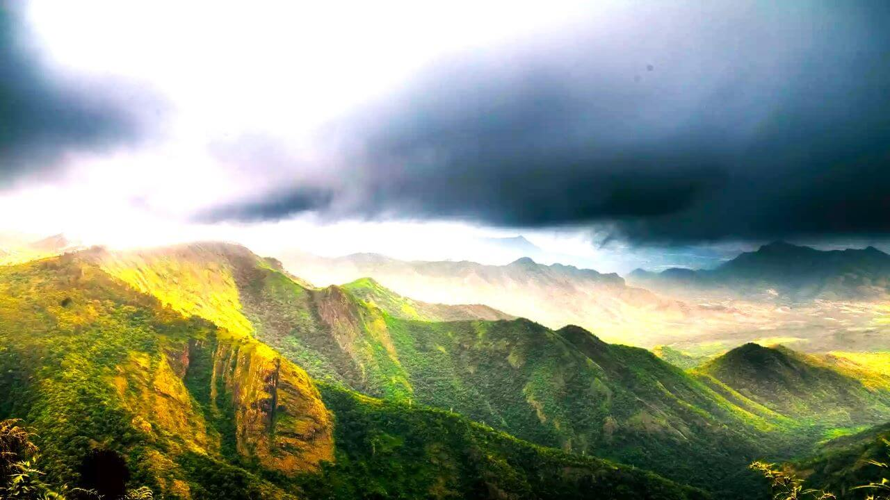

Kodaikanal is a picturesque hill station located in the Palani Hills of the Western Ghats in Tamil Nadu, South India, known for its cool, pleasant climate, misty forests, lush green slopes, and beautiful lakes, earning it the nickname "The Princess of Hills". Established by British missionaries and civil servants in 1845, the town offers stunning natural attractions, including several scenic viewpoints, waterfalls, and the unique Kurinji flower, which blooms once every 12 years.

Key Features:
- Natural Beauty: Kodaikanal is renowned for its dense, forested slopes, misty meadows, and the large, star-shaped Kodaikanal Lake, a central attraction for boating and strolling.
- Kurinji Flower: The region is famous for the rare blue-violet Kurinji flower, which carpets the hillsides once every twelve years, making it a unique phenomenon.
- History and Culture: The town's origins trace back to the mid-19th century when it was established as a refuge by British and American missionaries.
- Educational Hub: It also hosts several internationally recognized educational institutions.